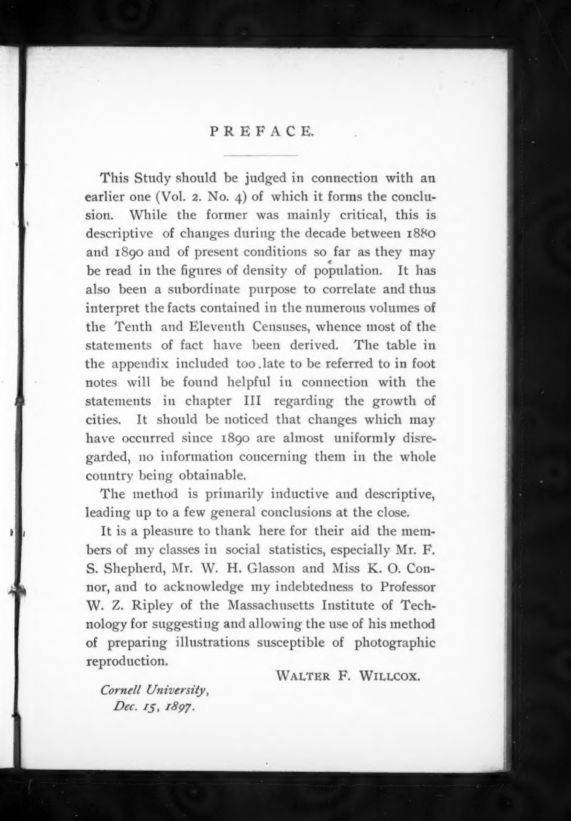

Willcox, 1897: onde viviam os americanos do censo de 1890?
Leitura: 13 min
Walter F. Willcox calcula a densidade da população dos condados americanos em 1890, mapeia os grandes aglomerados do Nordeste e conclui que rios, lagos e portos explicavam boa parte da distribuição.


Em 1890, os condados de Nova York e Kings, na foz do Hudson, tratados como um só centro, tinham 30.569 habitantes por milha quadrada. No país inteiro, incluído o Alasca, a média era de cerca de 18. Entre esses extremos, Walter F. Willcox procurou um número que dissesse algo sobre as condições em que os americanos de fato viviam, e chegou a 35, a densidade típica dos estados.
O estudo é Density and Distribution of Population in the United States at the Eleventh Census, nº 6 do segundo volume dos Economic Studies, de dezembro de 1897. Willcox, da Cornell University, apresenta-o como conclusão do nº 4: aquele era sobretudo crítico; este descreve as mudanças da década de 1880 a 1890 e as condições presentes tal como se leem nos números de densidade. São três capítulos, sobre considerações gerais, os Estados Unidos e os estados em ordem alfabética, e um apêndice com o crescimento das dez maiores cidades de cada estado. Uma errata corrige o estudo anterior: além dos seis condados que coincidiam com ilhas, havia dois no Puget Sound, San Juan e Island.
O método, diz o prefácio, é sobretudo indutivo e descritivo e leva a umas poucas conclusões gerais no fim. Willcox agradece aos alunos do seu curso de estatística social e a W. Z. Ripley, do Massachusetts Institute of Technology, que sugeriu o método de preparar as ilustrações para reprodução fotográfica. Quase todos os fatos vêm dos volumes do décimo e do décimo primeiro censos, e as mudanças posteriores a 1890 são deixadas de lado.
O que mede a densidade?
Willcox define a densidade da população como o número médio de pessoas por unidade de superfície terrestre, por analogia com a densidade da mecânica, a massa por unidade de volume. A unidade usual é a milha quadrada, e o acre para cidades. Por ser uma média, a densidade sofre os perigos de todas as médias: quanto maior a área, menos ela representa a situação de qualquer parte grande da população. Dizer que a Terra tem cerca de 28 habitantes por milha quadrada, observa, quase nada informa. Medidas volumétricas, como pessoas por moradia ou por cômodo, podem dar melhor resultado em distritos congestionados, porque, com os avanços da engenharia, os povos civilizados passaram a viver e trabalhar acima ou abaixo da superfície, onde as vantagens das minas ou das cidades os reúnem.
Com cerca de 52,3 milhões de milhas quadradas de terra e menos de um bilhão e meio de pessoas, a média mundial seria de 28 ou 29, como no Alabama ou no Mississippi. Se um terço da superfície for inabitável, como sustenta Ratzel, a média na parte habitável ficaria entre 42 e 43, como no Tennessee. Ásia e Europa, juntas, têm cerca de dois quintos da terra emersa e quase quatro quintos dos habitantes, com uma densidade média cerca de quatro vezes maior que a de qualquer outra grande massa de terra.
Willcox tira daí um argumento sobre a origem da espécie. A densidade média de 56,9 na Ásia-Europa, quatro vezes a de qualquer outra grande massa de terra, pode sustentar a tese de que a raça humana surgiu em algum ponto da Europa ou da Ásia, mas dificilmente serviria aos que defendem a origem europeia contra a asiática, porque a densidade da Europa cresceu muito no período histórico e talvez fosse menor que a da Ásia há mil ou dois mil anos. O raciocínio de que os menos numerosos migraram dos mais numerosos, lembra, tinha sido usado na controvérsia sobre o lugar de origem dos arianos ou da língua ariana. Se todos os registros históricos fossem destruídos, acrescenta, poderia apoiar-se no fato de a grande maioria dos caucasianos viver na Europa a tese de que os caucasianos da América, da Austrália e do sul da África vieram da Europa, e não o contrário.
O capítulo fecha com uma tese sobre a expansão europeia. Nos últimos séculos, escreve Willcox, a expansão da raça caucasiana pelo globo aumentou muito a densidade das regiões para onde foi, seja pelo próprio crescimento, como na América e na Austrália, seja pela multiplicação da população nativa sob a sua proteção, como na Índia e em Java; ao mesmo tempo, os países da Europa cresciam com rapidez sem precedentes, em boa parte como resultado indireto da mesma expansão. Esse aumento, para o autor, talvez seja uma justificação ética mais profunda da expansão da Europa do que os argumentos de descoberta, conquista ou cristianização apresentados como sua desculpa. A estatística não mede as diferenças qualitativas entre os seres humanos, salvo quando correlacionadas a traços físicos ou linguísticos objetivos, mas oferece uma medida quantitativa da quantidade de vida humana na superfície da Terra.
“uma densidade da população alta e crescente pode ser considerada uma medida estatística de civilização alta e em progresso” (a high and increasing density of population may be deemed a statistical measure of high and advancing civilization)
Pelos mapas de Behm e Hanemann, de 1873, e de Levasseur, de 1885, quase não há regiões extensas densamente povoadas ao sul do equador; a principal exceção é Java, com área parecida com a do estado de Nova York e população mais de três vezes e meia maior. Na Ásia e na Europa há três grandes regiões densas: o leste da China, com o Japão; o vale do Ganges, onde 35 milhões de pessoas vivem da agricultura com um acre ou menos por cabeça; e a Europa centro-ocidental. Entre as nove grandes potências territoriais, os Estados Unidos eram o sexto em densidade.
Como contar quem vive nas reservas?
Antes de calcular, Willcox corrige o censo. A tabela oficial dividia a população geral, que exclui os residentes das reservas indígenas, pela superfície total, que as inclui. Em Dakota do Sul, por exemplo, a densidade oficial de 4,28 resultava de dividir 328.808 pessoas por 76.850 milhas quadradas, deixando de fora as 19.752 pessoas das reservas, mas não as cerca de 35.800 milhas quadradas que elas ocupavam. Para ele, área e população das reservas deviam receber o mesmo tratamento; incluiu as duas, e os resultados mudaram em vinte dos 49 estados, quase sempre pouco.
Os estados caem então em três grupos. Os de densidade baixa, abaixo da média nacional, incluem, além do Alasca, todos os estados a oeste do Mississippi que não o tocam, mais Minnesota e Flórida, e ocupam 65,5% do território. Os de densidade alta, acima de 50, são todos os estados ao norte do Potomac e do Ohio e a leste do Mississippi, exceto os cinco mais setentrionais; neles a agricultura, embora importante, não é a ocupação característica. No meio ficam estados predominantemente agrícolas.
Para medir a regularidade do povoamento, Willcox calcula a diferença média entre a densidade de cada condado e a do estado, em percentagem desta. Os estados mais regularmente povoados eram o Território Indígena, Vermont, Iowa, Alabama, Arkansas, Indiana, Mississippi e Carolina do Norte, todos sobretudo agrícolas; os mais irregulares, os do Extremo Oeste, como Califórnia e Nevada, e os estados manufatureiros do Nordeste. Ele adverte que o traçado dos limites pesa no resultado: o pequeno condado de St. Louis tinha 9.412 habitantes por milha quadrada; o grande condado de Chicago, 1.242.
O mapa do censo podia ser verificado?
Willcox e os seus alunos calcularam a densidade dos 2.790 condados e prepararam um mapa com oito gradações de cor, cada condado numerado. O escritório do censo fizera cálculos parecidos para o seu mapa, e o autor não duvida de que tenham sido cuidadosos, mas aponta diferenças. O censo examinava por seções os condados de extensão incomum, critério sem definição numérica; deduzia a população das cidades de 8 mil habitantes ou mais sem deduzir a sua área; dava às seis gradações um sentido econômico, do pastoreio à manufatura; e não mostrava os limites dos condados, de modo que não se podia verificar a que grupo cada um pertencia.
Sobre o sentido econômico das faixas, ele questiona a afirmação, feita em 1874, de que a agricultura americana não sustentava mais de 45 pessoas por milha quadrada: se era verdadeira então, já não seria tanto em 1897, e o seria menos no futuro. Ainda assim, não defende o uso exclusivo do próprio método. Julga o mapa do censo preferível em vários aspectos e acha que cada um ajuda a interpretar o outro. Para o ensino, porém, insiste em que a estatística não deve ser aceita por autoridade, e em que a verificação deve estar sempre ao alcance do estudante.
Onde se concentrava a população?
Vinte e sete condados tinham mais de 500 habitantes por milha quadrada, quase todos pequenos. Agrupados, formam centros: ao redor da baía de Massachusetts, 1.375 milhas quadradas com essa densidade; ao redor da baía de Nova York, só 857. A foz do Hudson era o maior centro populacional do país não pela extensão da área densa, mas pela densidade altíssima numa área limitada: os oito condados em torno da baía tinham, juntos, mais de três vezes a densidade do condado de Cook, o de Chicago.
Baixando o limite, os centros se fundem. Com 150 habitantes por milha quadrada, forma-se uma faixa contínua de Newburyport, na foz do Merrimac, a Trenton, no Delaware: 9.363 milhas quadradas com mais de um décimo da população do país. Somada ao grupo de Filadélfia, separado dela por poucas milhas, a região reúne 8.900.716 pessoas, cerca de um sétimo do total.
O que os estados mostram?
O terceiro capítulo percorre os estados um a um, com dados de relevo, chuva, ocupações e crescimento urbano. Washington cresceu mais de 350% na década, cerca de 1% a cada 23 dias. Em 1880 não tinha cidade de mais de 4 mil habitantes; em 1890, Seattle passara de 3.533 para 42.837 moradores, Tacoma de 1.098 para 36.006 e Spokane Falls de 350 para 19.922, e mais de um terço da população vivia em cidades desse porte. Dakota do Norte cresceu em ritmo semelhante, mas continuava rural: 94,43% da população vivia em áreas rurais e em cidades de menos de 2.500 habitantes.
Em Massachusetts, menos de um terço da área era terra agrícola melhorada em 1890, e essa área diminuíra na década, como em todos os estados do Nordeste acima da linha Mason-Dixon. Uma faixa de 22 municípios entre os vales do Housatonic e do Connecticut não tinha nenhum com mais de 25 habitantes por milha quadrada. A indústria do estado, diz Willcox, fora favorecida pela força hidráulica, ligada a chuvas mais bem distribuídas ao longo do ano que em qualquer outra parte do país. No Wyoming, só dois dos doze condados tinham mais de uma pessoa por milha quadrada.
Que conclusões gerais ele tira?
As conclusões finais são geográficas. Nos estados do Norte a leste do Mississippi, as regiões mais densas e de crescimento mais rápido ficam perto da costa, a menos de 500 pés de altitude; no Sul, ficam no interior e nas terras altas. Os grandes portos ao sul da Virgínia, fora os da Flórida, cresciam devagar, como Wilmington, Savannah, Charleston, Mobile, Nova Orleans e Galveston, e Willcox atribui isso em boa parte à rápida expansão das ferrovias do Sul.
As cidades no curso inferior dos grandes rios, sobretudo do Mississippi, de margens baixas e vazão irregular, cresciam menos que as vizinhas; Cincinnati, a maior cidade de Ohio e a de crescimento mais lento entre as dez primeiras do estado, sofrera muito com as cheias. O crescimento mais rápido estava nos Grandes Lagos: entre as quatro cidades de mais de meio milhão, Chicago cresceu mais que o dobro de Nova York, Filadélfia ou Brooklyn. E as cidades bem situadas para servir de saída a vales agrícolas ou manufatureiros tendiam a ter importância correspondente, como a maior cidade da Nova Inglaterra em relação ao vale do Merrimac.
A conclusão que mais se impôs ao autor, escreve ele, foi não ter apreciado antes o número, a variedade e a importância de um fator.
“as influências exercidas sobre a distribuição da população pela hidrografia do país” (the influences exerted upon the distribution of population by the country’s hydrography)
Agora que as ferrovias levavam uma parte crescente dos passageiros e o carvão fornecia uma parte crescente da energia, acrescenta, a importância do sistema de águas do país corria o risco de ser subestimada.
Na minha leitura
Na minha leitura, a contribuição mais atual do estudo é a consciência de que a medida depende da unidade. Willcox mostra que a média nacional quase nada diz, que a densidade de um condado muda com o traçado dos seus limites e que agrupar condados com limites de 500, 250, 150 ou 100 habitantes revela regiões diferentes. Ao preferir a densidade típica, a faixa em que vive a maior parte das pessoas, à média simples, ele antecipa a ideia de medir a densidade do ponto de vista de quem mora no lugar.
Há também uma economia implícita nas conclusões. Portos, rios navegáveis, lagos e força hidráulica aparecem como determinantes da localização das cidades, porque reduzem custos de transporte e de energia, e a ferrovia surge como a força que redistribui essas vantagens. É o tipo de explicação pelos custos de transporte e pelas economias de aglomeração que a geografia econômica retomaria muito depois.
Glossário
- Densidade da população
- número médio de habitantes por unidade de superfície terrestre, em geral a milha quadrada.
- Densidade típica
- faixa de densidade em que vive a maior parte da população, que Willcox prefere à média simples.
- Variação média
- diferença média entre a densidade dos condados e a do estado, usada como medida de regularidade do povoamento.
- População geral
- conceito do censo de 1890 que exclui os residentes das reservas indígenas, do Território Indígena e do Alasca.
- Milha quadrada
- unidade de área de cerca de 2,59 quilômetros quadrados.
- Terra agrícola melhorada
- terra cultivada, em pastagem formada ou em pousio, distinta da terra virgem.
- Cabeceira de navegação
- ponto mais a montante de um rio ou lago acessível às embarcações.
Fontes
- Density and Distribution of Population in the United States at the Eleventh Census (pp. 385–450). Internet Archive (número completo, PDF)
- Appendix: Growth of Cities 1880–1890 (pp. 451–456). Internet Archive (número completo, PDF)
- Número completo digitalizado (domínio público): Internet Archive.
Documento em domínio público (EUA, publicado antes de 1931), via JSTOR Early Journal Content e Internet Archive. Resumo e comentário do autor deste site, sem afiliação com a American Economic Association. Encontrou um erro? Escreva: a correção é publicada no próprio texto, com data.
← ES 11 · Douglass, 1740: quem perdia com o papel-moeda das colônias? ES 13 · Dunbar, 1898: o “governo por injunção” e os limites da justiça →